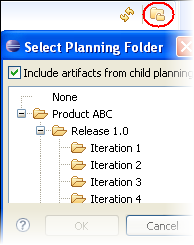

To plan how and when an artifact is to be addressed,
assign it to a planning folder.
Note: A planning folder can contain artifacts from many different
trackers. When you assign an artifact to a planning folder, the artifact is still in
the tracker where it was created.
-
To specify a planning folder in the Backlog pane, click the Select planning folder icon.

To see artifacts that are assigned to child planning folders of the planning folder selected in the backlog pane, select the Include artifacts from child planning folders option in the Select Planning Folder dialog.
For an example of how this feature can be useful, let's say you initially assigned some artifacts to Release 1.0. Now you are ready to review those artifacts and decide which ones will be part of Release 1.0 > Iteration 1. In this case, you could select Release 1.0 > Iteration 1 in the artifact table pane, and select Release 1.0 in the backlog pane, without selecting Include artifacts from child planning folders. You then see only Release 1.0 artifacts that have not yet been assigned to an iteration. As you drag an artifact from the backlog pane to the artifact table, it gets dropped from the backlog pane as it is added to the artifact table. Next you might select Release 1.0 > Iteration 2 in the artifact table pane. Because Include artifacts from child planning folders is not selected, the backlog pane does not show those artifacts that you previously assigned to Release 1.0 > Iteration 1.
Note: The artifact table pane always includes artifacts from child planning folders.
- Choose "None" to see all tracker artifacts in the project that have not been assigned to any planning folder.
- Choose a specific planning folder to see the list of artifacts that needs to be completed for that iteration or release.
-
To schedule an artifact that has not yet been assigned to any planning folder, find it in the "None" Backlog pane, and drag and drop it to a folder in the Planning Folder pane.
-
As conditions change during the course of your product release, you may want to reassign an artifact from one iteration or release to another. To do this, drag and drop the artifact to the target planning folder from the backlog pane or the artifact table.
Any effort data you have provided is recalculated automatically.
Note: When a tracker is disabled, artifacts from that tracker do
not contribute to the effort totals calculated for any planning folder they are
in.
To see current data, you may need to refresh the panes from where you moved the artifacts.